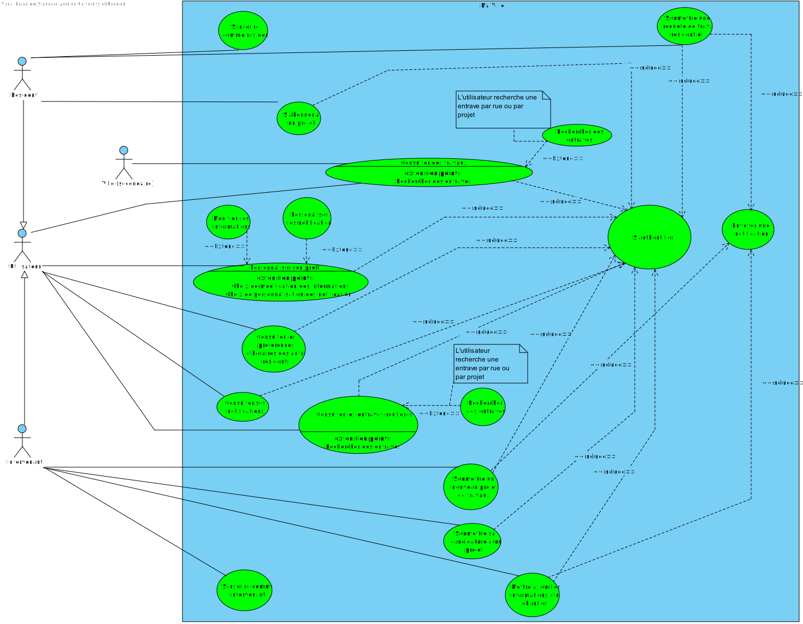
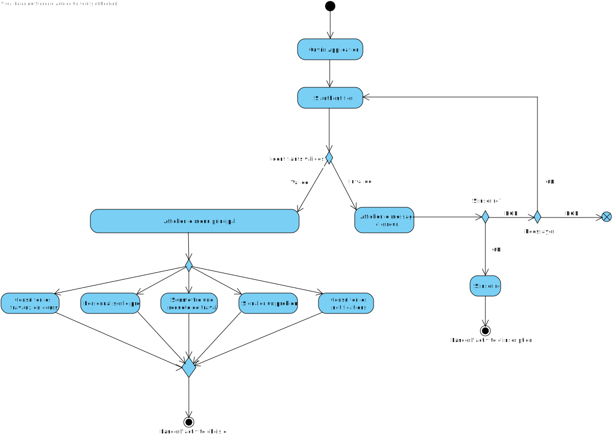
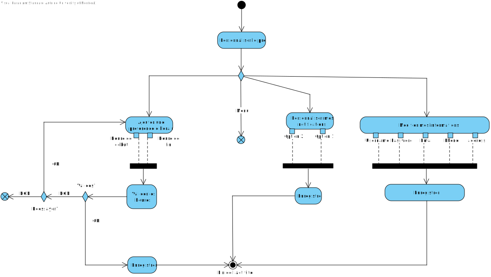
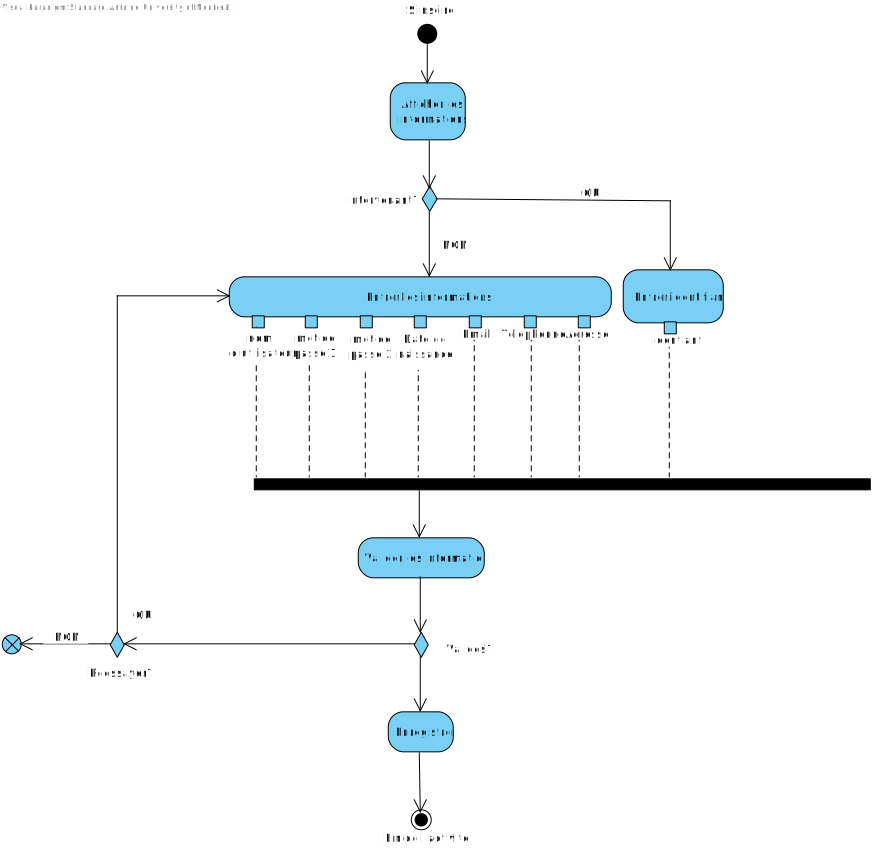
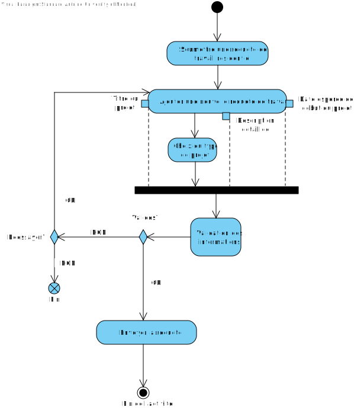
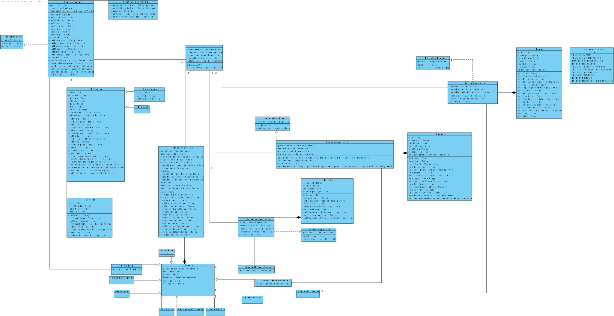
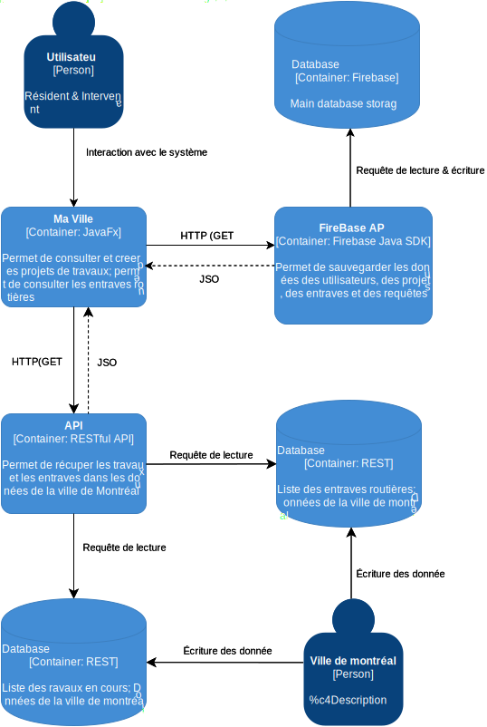

Cadre du projet
Introduction
Montréal fait face à un défi de taille : la multiplication des chantiers urbains qui
perturbent la vie quotidienne des citoyens. Le système actuel, bien qu'existant, ne
répond pas adéquatement aux besoins des résidents et des intervenants.
Les travaux non annoncés causent beaucoup de stress aux résidents qui ne peuvent plus
circuler facilement dans leur ville, affectant leur mobilité et leur accès aux services
essentiels.
Échéancier
Phase 1 : Développement Initial (25 sept - 2 oct)
Mercredi 25 septembre
- Réunion initiale de l'équipe
- Répartition des tâches :
- Mostafa : Cadre du projet
- Introduction
- Échéancier
- Hypothèses
- Glossaire
- Personas
- Antoine : Exigences
- Cas d'utilisation
- Diagramme d'activités
- Annmar : Analyse
- Risques
- Besoins non fonctionnels
- Besoins matériels
- Stockage
- Intégration
26 sept - 2 oct
- Travail individuel sur les sections assignées
- Communications régulières entre Mostafa, Antoine et Annmar
Phase 2 : Finalisation du Rapport (2 oct - 4 oct)
Mercredi 2 octobre
- 13h00-14h:00 : Réunion de mise au point
- Mostafa : Présentation du cadre du projet
- Antoine : Revue des cas d'utilisation et diagrammes
- Annmar : Exposition de l'analyse des risques et besoins
Jeudi 3 octobre
- Matin :
- Mostafa et Antoine : Intégration du cadre avec les cas d'utilisation
- Annmar : Alignement de l'analyse avec les autres sections
- Après-midi : Révision collective du document
- Soir : Corrections basées sur les retours de l'équipe
Vendredi 4 octobre
- Matin :
- Mostafa : Vérification finale de la cohérence
- Antoine : Révision technique
- Annmar : Validation de l'analyse
- 14h00 : Revue finale du rapport par toute l'équipe
- 16h00 : Finalisation et remise du rapport
Phase 3 : Développement du Prototype (7 oct - 11 oct)
Lundi 7 octobre
- 13h00-14h:00 : Réunion de planification du prototype
- Mostafa : Focus sur l'expérience utilisateur
- Antoine : Aspects techniques
- Annmar : Conformité avec l'analyse
Mardi 8 - Jeudi 10 octobre
- Début du développement collaboratif
- Répartition suggérée :
- Mostafa : Interface utilisateur et interactions
- Antoine : Architecture technique et développement backend
- Annmar : Tests et validation des fonctionnalités
Vendredi 11 octobre
- Matin : Finalisation du prototype
- Après-midi :
- Tests dirigés par Annmar
- Corrections par Mostafa et Antoine
- 16h00 : Présentation interne du prototype
Points de Contrôle Quotidiens
- Standup meeting virtuel à 13h00
- Chaque membre partage :
- Ce qui a été fait
- Ce qui est prévu
- Les obstacles rencontrés
Outils de Collaboration
- Communication : Discord
- Partage de documents : Discord
- Développement : GitHub
Hypothèses (optionnel)
La collecte et l'analyse des données via l'application permettront
une meilleure planification des travaux et augmenteront l'efficacité des interventions.
L'utilisation d'une plateforme numérique réduira les délais et les coûts des projets.
L'accès à des données en temps réel permettra une gestion plus agile des travaux.
Un système de notification personnalisé permettra une meilleure adaptation aux
perturbations causées par les travaux.
Les intervenants bénéficieront d'une meilleure compréhension des besoins et contraintes
des résidents.
La transparence de l'information réduira le stress et la frustration des résidents.
La portion de personnalisation des notifications ne comporte présentement aucun item. Il est prévu d'implémenter quelques personnalisation comme :
- Le type de notification (push, alertes, etc..)
- Activer ou désactiver les notifications
- Recevoir les notifications par email
- Autres
Exigences
Après communication avec le client et une familiarisation avec les type de travaux potentiels,
nous avons préparé un glossaire rassemblant les termes et expressions clés caractérisant
l'environnement.
Glossaire MaVille : Guide Complet
Utilisateurs et Rôles
- Résident
- Citoyen inscrit sur l'application avec une adresse vérifiée à Montréal.
- Intervenant
-
Personne ou organisation effectuant des travaux, divisé en trois catégories :
- Intervenant public
- Organisme gouvernemental (ex: Ville de Montréal).
- Entrepreneur privé
- Entreprise de construction ou de services.
- Particulier intervenant
- Individu autorisé pour certains travaux.
Types de Travaux
- Travaux routiers
- Réparation ou modification des routes et trottoirs.
- Travaux souterrains
- Interventions sur les réseaux sous la chaussée.
- Entretien urbain
- Maintenance régulière des espaces publics.
- Travaux de services
- Interventions sur les réseaux de gaz, électricité ou
télécommunications.
- Travaux de construction
- Developpement d'un nouveau projet
- Travaux de rénovation
- Changement, modernisation ou restauration d'un ancien projet de travaux
- Entretiens paysager
- Entretiens des espaces natures
- Travaux liés au transport en commun
- Travaux sur les différents transports en commun. Travaux sur les lignes de métro ou sur les arrêts de bus
- Travaux de signalisation et éclairage
- Entretiens ou construction sur les feux de circulation, les pannaux routiers et les lampadaires.
Gestion des Projets
- Statuts des travaux
-
Différents statuts décrivent l'état des travaux :
- Prévu
- Planifié mais non commencé.
- En cours
- Actuellement en exécution.
- Suspendu
- Temporairement arrêté.
- Terminé
- Complété.
- Entrave
- Obstacle ou perturbation causée par des travaux.
- Chantier
- Zone délimitée où se déroulent les travaux.
- Impact sur la mobilité
- Effet des travaux sur les déplacements.
Fonctionnalités de l'Application
- Filtrage
- Tri des travaux par type, quartier ou date.
- Notification personnalisée
- Alerte sur les travaux dans une zone d'intérêt.
- Requête de travail
- Demande formelle soumise par un résident.
- Candidature
- Proposition d'un intervenant pour réaliser des travaux.
- Suivi de requête
- Visualisation de l'état d'avancement d'une demande.
- Signalement
- Rapport d'un problème à la ville.
- Évaluation post-travaux
- Retour d'expérience des résidents.
Planification et Coordination
- Planification participative
- Contribution des résidents au choix des horaires.
- Quartier affecté
- Zone géographique impactée par les travaux.
- Plage horaire préférentielle
- Période suggérée par les résidents.
- Conflit d'horaire
- Incompatibilité entre travaux prévus et préférences résidentes.
Éléments Techniques
- Identifiant de la ville
- Code unique à 8 chiffres pour les intervenants.
- Mise à jour de chantier
- Modification des informations d'un projet.
- Abonnement aux notifications
- Inscription pour recevoir des alertes.
Persona (optionnel)
-
Léo – Entrepreneur en rénovation
PME
50%
Homme de 36 ans, propriétaire d'une petite entreprise
Profil
- 8 employés sous sa direction
- Spécialisé en rénovation résidentielle
- Expert en relation client
Buts
- Développer sa clientèle via l'application
- Synchroniser ses travaux avec les autres chantiers du quartier
- Maintenir une excellente réputation en ligne
Défis
- Coordination avec les autres entrepreneurs
- Respect des délais malgré les imprévus
- Gestion des attentes des clients
-
Emilia – Étudiante en fauteuil roulant
ACC
80%
Femme de 23 ans, utilisant les transports en commun
Profil
- Étudiante en droit
- Militante pour l'accessibilité universelle
- Utilisatrice quotidienne des transports adaptés
Buts
- Assurer des déplacements sécuritaires malgré les travaux
- Contribuer à l'amélioration de l'accessibilité urbaine
- Partager ses expériences pour sensibiliser les planificateurs
Défis
- Trouver des trajets alternatifs accessibles
- Naviguer dans les zones de travaux
- Anticiper les obstacles potentiels
-
Julie – Gestionnaire municipale
VIL
90%
Femme de 48 ans, responsable de la planification des travaux
publics
Profil
- 15 ans d'expérience en gestion municipale
- Maîtrise en administration publique
- Utilisatrice avancée des technologies
Buts
- Optimiser la coordination des chantiers urbains
- Réduire les plaintes citoyennes grâce à une communication
proactive
- Améliorer l'efficacité des interventions urbaines
Défis
- Jongler avec de multiples intervenants et calendriers
- Gérer les attentes des résidents et des entrepreneurs
- Respecter les contraintes budgétaires et temporelles
-
Sarah – Propriétaire de café
COM
60%
Femme de 41 ans, gérante d'un café dans le Plateau
Profil
- Commerce établi depuis 5 ans
- Très impliquée dans sa communauté locale
- Présence active sur les réseaux sociaux
Buts
- Minimiser l'impact des travaux sur son commerce
- Informer efficacement sa clientèle des perturbations
- Participer aux décisions affectant son quartier
Défis
- Maintenir son chiffre d'affaires pendant les travaux
- Assurer l'accessibilité de son établissement
- Gérer les livraisons malgré les entraves
-
Karim – Chauffeur de taxi
MOB
50%
Homme de 44 ans, travaillant principalement au
centre-ville
Profil
- 12 ans comme chauffeur de taxi
- Père de famille
- Utilise son téléphone comme outil de travail principal
Buts
- Optimiser ses itinéraires en temps réel
- Éviter les retards causés par les travaux imprévus
- Maintenir la satisfaction de sa clientèle
Défis
- Navigation dans une ville en constant changement
- Gestion du stress lié aux détours imprévus
- Communication des délais aux clients
Catégories d'Utilisateurs MaVille - Guide des Abréviations
Abréviations Expliquées
Résidents et Usagers
- RES - Résident standard
- MOB - Mobilité (utilisateurs se déplaçant beaucoup)
- ACC - Accessibilité (utilisateurs ayant des besoins spéciaux)
- SEN - Senior (utilisateurs âgés)
- PRO - Propriétaire
Professionnels
- VIL - Ville (employés municipaux)
- ENT - Entrepreneur
- PME - Petite et Moyenne Entreprise
- COM - Commerçant
- ING - Ingénieur
- UTI - Utilitaires (services publics)
Autres Catégories
- ECO - Écologie (militants/intéressés par l'environnement)
- EDU - Éducation
- DEV - Développeur immobilier
- PAY - Paysagiste
Signification du Pourcentage
Le pourcentage après chaque abréviation (ex: VIL90%, MOB50%) indique :
- Le niveau d'engagement prévu avec l'application
- La fréquence d'utilisation estimée
- L'importance de l'application dans leurs activités quotidiennes
Échelle :
- 90-100% : Utilisation critique et quotidienne
- 70-89% : Utilisation fréquente
- 50-69% : Utilisation régulière
- 30-49% : Utilisation occasionnelle
-
<30% : Utilisation sporadique
Exemples d'Utilisation
-
VIL90% (Sophie, gestionnaire municipale)
- Utilise l'application quotidiennement pour son travail
- Dépend fortement de l'outil pour la planification
-
MOB50% (Ahmed, chauffeur de taxi)
- Consulte l'application régulièrement
- L'utilise principalement pour la planification d'itinéraires
-
ACC80% (Léa, étudiante en fauteuil roulant)
- Dépend fortement de l'application pour ses déplacements
- L'utilise presque quotidiennement
Cas d'utilisation

Notes à propos du diagramme
- On retrouve quatre types d'acteur : les utilisateurs généraux (utilisateur), les résidents, les intervenants et la ville
- On peut généraliser certains cas d'utilisation commun aux résidents et aux intervenants
- L'acteur ville joue un rôle d'acteur secondaire dans la consultation et la recherche de travaux
Scénarios
,
Scénario principal
- Le résident accède à l'option de création de compte pour
résidents
- Le système demande au résident d'entrer ses informations
- Le résidents entre ses informations
- Le système valide les informations
- Le système valide la créatio du compte
- Le réisdent accède au logiciel
Scénarios alternatifs
-
L'adresse de résidence n'est pas valide
- Le système affiche que l'adresse n'est pas valide
- Le scénario reprend à l'étape 3
-
L'adresse électronique est déjà associé à un compte
- Le système propose au résident de se connecter s'il possède
déjà
un compte
- Le scénario se termine.
Scénario principal
- L'intervenant accède à l'option de création de compte
pour
les intervenants
- Le système demande à l'intervenant d'entrer ses
informations
- L'intervenant entre ses informations
- Le système valide les informations
- Le systme valide la création du compte
- L'intervenant accède au logiciel
Scénarios alternatifs
-
L'identifiant de la ville est invalide
- Le système demande à l'intervenant d'entrer un identifiant
valide
- Le scénario reprend à l'étape 3
Scénario principal
- Le résident accède à l'option de consultation de
travaux en
cours ou à
venir
- Le système affiche la liste des travaux en cours ou à
venir
- Le résident sélectionne le projet qu'il désire
consulter
- Le système affiche les informations du projet
- Le résident consulte les informations
Scénarios alternatifs
-
Il n'y a aucun travaux en cours ou à venir
- Le systeme affiche qu'il n'y a aucun travaux en cours ou à venir
- Le scénario se termine
Scénario principal
- Le résident accède à l'option de consultation de
travaux en
cours ou à
venir
- Le résident entre des mots-clés de recherche tel une
adresse ou un nom de
projet et lance la recherche
- Le système fait une recherche dans la base de donnée
selon
les mots-clés
entrés
- Le systeme affiche les résultats
Scénarios alternatifs
-
La recherche ne retourne rien
- Le systeme affiche qu'aucun projet ne correspond à la
recherche
lancée
- Le scénario se termine
Scénario principal
- L'utilisateur accède à l'option de modification des
informations
- Le systeme affiche les champs d'information à remplir
- L'utilisateur entre ses informations qu'il souhaite modifier
- Le systeme valide les informations modifiés
- Le systeme enregistre les modifications
Scénarios alternatifs
-
Les informations entrées ne sont pas valide
- Le systeme affiche qu'une ou plusieurs informations entrées ne sont pas valide
- Le scénario reprend à l'étape 2
Scénario principal
- Le résident accède à l'option de personnalisation des
notifications
- Le systeme affiche les différentes options de
personnalisations
- Le résident choisis ses préférences
- Le systeme enregistre les préférences
Scénario principal
- Le résident accède à l'option de consultation des
notifications
- Le systeme recherche dans la base de données les
notifications associés à Le résident
- Le système affiche les notifications de Le résident
- Le résident consulte les différentes notifications
Scénarios alternatifs
-
La recherche ne retourne pas de notifications
- Le système affiche qu'il n'y a aucune notification à consulter
- Le scenario se termine
Scénario principal
- Le résident accède à l'option de consulation des
préférences des autres résidents
- Le système recherche dans la base de donnée les
préférences des autres résidents du quartier
- Le systeme affiche les préférences des autres résidents
du quartier
Scénarios alternatifs
-
La recherche ne retourne rien
- Le systeme affiche qu'il n'y pas de préférences de plages
horaire enregistré par les autres résidents de son quartier
- Le scénario se termine
Scénario principal
- Le résident accède à l'option soumission de requête de
travail
- Le systeme vérifie qu'il n'y a pas de requête du résident
en
cours de
traitement
- Le système demade au résident d'entrer les informations
- Le résident entre les informations relatives au projet
- Le systeme enregistre les informations
- Le systeme envoie la requête à un intervenant
- L'intervenant accepte ou refuse la requête
- Le systeme envoie la réponse de l'intervenant au résident
sous forme de
notification
Scénario alternatif
-
Le résident à déjà soumis un requête qui est encore en traitement
- Le systeme affiche qu'il y a déjà une requête en traitement
- Le scenario se termine
Scénario principal
- L'intervenant accède à l'option de consultation des
requêtes
- Le système recherche dans la base de donnée les requêtes courantes
- Le systeme affiche les différentes requêtes trouvées
Scénarios alternatifs
-
Il n'y a aucune requête
- Le systeme affiche qu'il n'y a aucune requête
- Le scénario se termine
Scénario principal
- L'intervenant accède à l'option de consultation des requêtes
- Le système affiche les requêtes
- L'intervenant choisis le projet auquel il désire
soumettre sa candidature
- Le système demande d'entrer la date de début et la date
de fin
- L'intervenant entre les dates demandées
- Le systeme valide les dates entrées
- Le système enregistre les dates
Scénarios alternatifs
-
Les dates ne sont pas valide
- Le systeme affiche que les dates entrées ne sont pas valides
- Le scénario reprend à l'étape 4
Scénario principal
- L'intervenant accède à l'option de soumission de nouveau
projet de travaux
- Le système demande d'entrer les informations relatives au
projet
- L'intervenant entre les informations
- Le système valide les informations
- Le systeme valide qu'il n'y a pas de conflit avec les
préférences des résidents relativement aux dates
- Le système enregistre la soumission
Scénarios alternatifs
-
Il y a un conflit avec une ou des préférences des résidents
- Le système affiche qu'il y a des conflits avec les préférences
des résidents
- Le système affiche les différents conflits
- Le scenario reprend à l'étape 3
Scénario principal
- L'intervenant accède à la page du projet
- L'intervenant choisis l'option de mise à jour du projet
- Le systeme affiche les informations que l'intervenant
peut modifier
- Le système enregistre les informations
Scénario principal
- Un projet est mis à jour ou un nouveau projet est soumis
- Le système crée une nouvelle notification
- Le systeme envoi la noitification aux utilisateurs liés au projet mis à jours ou aux utilisateurs concerné par la soumission du projet
Scénario principal
- L'utilisateur accède à l'option de consultation des entraves routières
- Le système recherche dans la base de donnée les entraves routières
- Le systeme affiche les entraves routières trouvées
- L'utilisateur consulte les différentes entraves routières
Scénarios alternatifs
-
Il n'y a aucune entrave routières trouvées
- Le système affiche qu'il n'y a aucune entrave routière
- Le scenario se termine
Scénario principal
- L'utilisateur accède à l'option de consultation des entraves routières
- L'utilisateur entre dans la barre de recherche des mots-clés de recherche
- Le système recherche dans la base de donnée les entraves routières selon les mots-clés entrés
- Le systeme affiche les entraves routières trouvées
- L'utilisateur consulte les entraves routières
Scénarios alternatifs
-
Il n'y a aucune entrave routières trouvées selon les mots clés
- Le système affiche qu'il n'y a aucune entrave routière qui correspond à la recherche
- Le scenario se termine
Diagramme d'activités
Diagramme d'activité principal : Connexion et Interactions du Menu Principal

Diagramme d'activité pour Personnaliser le profil

Diagramme d'activité pour S'inscire dans le système

Diagramme d'activité pour Soumettre une requête de travail

Analyse
Risques
-
Manque de participation des résidents à la planification participative, pouvant mener à une
faible adoption. Par exemple, il sera difficile pour les intervenants de prévoir des projets
qui correspondent aux préférences des résidents si peu ou aucun résident enregistre leur préférences
d'horaire concernant les travaux. De même si les résidents ou les intervenants ne soumettent pas leurs
travaux via l'application, il se peut qu'il y ait des travaux non enregistré par le systeme.
Solution : Pour prévenir le risque d'adoption faible, des campagnes de sensibilisation à une bonne utilisation
de l'application peuvent être créées. De plus, le systeme peut inclure une fonctionnalité de détection d'information
manquante d'un utilisateur (par exemple un utilisateur n'a pas encore enregistré ses préférences) et envoyer des notifications
incitant les utilisateurs à compléter leur profile et enregistrer leurs préférences.
-
Difficultés à maintenir des informations à jour sur les travaux, ce qui pourrait réduire
la fiabilité du service. Ainsi, certaines informations liés à un projet extérieur à l'application Ma Ville pourraient
ne pas être à jour lors de l'utilisation du système par un utilisateur quelconque
Solution : Automatisation des mises à jour via API, avec une fréquence permettant d'être à jour 90% du temps.
-
Risques de sécurité liés à la collecte de données personnelles des utilisateurs.
Solution : Chiffrement des données sensibles et audits réguliers de sécurité.
-
Risque d'interférences entre différents intervenants travaillant simultanément dans des
zones proches. Par exemple, deux intervenants peuvent soumettre leur candidature au même moment.
Solution : Coordination centralisée des plannings des travaux. Cela inclut de traiter les demandes chronologiquement, et d'avoir
qu'un seul controlleur pour tous les utilisateurs, afin de coordiner les requêtes et d'éviter l'interférences d'actions simultanés.
- Difficulté à intégrer des systèmes existants pour les informations de travaux de la ville et des entreprises privées. La structure et le formats des données
ne sont pas nécéssairement les même dépendemment de la provenance de l'information.
Solution : Collaboration avec les partenaires pour standardiser les formats de données. Inclure un module de transformation et standardisation des données
provenant d'une source externe.
Besoins non fonctionnels
-
Performance : L'application doit être capable de charger les informations de travaux en
moins de 3 secondes. Les utilisateurs doivent pouvoir consulter les informations (ou autres) rapidement.
-
Scalabilité : L'application doit pouvoir gérer une augmentation du nombre d'utilisateurs
sans diminution des performances. Ainsi, l'application ne doit pas être réduit à un certain nombre d'utilisateur
mais plutôt conserver la performance souhaité peu importe le nombre d'utilisateur.
-
Sécurité : Les informations personnelles des utilisateurs doivent être stockées de
manière sécurisée, avec chiffrement des mots de passe. Certaines informations des utilisateurs
sont confidentielle et le sytème ne doit pas compromettre la confiance des utilisateurs en ce quasi-constante
concerne la privacité des informations personnelles.
-
Accessibilité : L'application doit être accessible pour tous les types d'utilisateur. Ainsi, le système doit
fonctionner sur la plupart des système d'opération (OS), afin de ne pas limiter l'utilisation à seulement certaines
personnes possedant les exigences demandé par le système.
-
Fiabilité : L'application doit présenter des informations valide 99.9% du temps. C'est-à-dire que les informations doivent
être à jours.
Besoins matériels
Le projet nécessite des serveurs pour héberger l'application et la base de données. Ces
serveurs
doivent être capables de supporter un grand nombre d'utilisateurs simultanés et garantir une
disponibilité quasi-constante. De plus, l'utilisateur doit avoir une version de java installé sur sa machine.
Solution de stockage
Pour stocker les données, Firebase sera utilisé comme solution de stockage externe. Cela permet de sauvegarder des
utilisateurs, des projets et des requêtes. Une interface d'API est developpé permettant de lire et d'écrire les données.
Firebase permet la serialization des objets, ce qui facilite grandement la tâche d'intégration des données de la base
de données au système.
Solution d'intégration
Deux API seront utilisé pour récupérer les informations de la ville : une permettant de limiter
les entraves routières en cours, et l'autre permettant de lire les projets de travaux en cours.
Les interfaces d'API permettront ainsi de récuper les données et de les affichers dans le modèle
de données du système.
De plus, une API de google sera utilisé pour valider les adresses des utilisateurs, ainsi que récupérer
des informations additionnelles comme le quartier et les "id" relatifs aux données d'adresse.
Prototype
La documentation du code source.
Le prototype est developpé sous forme d'une interface graphique avec JavaFx (de Java). Il permet actuellement
de se connecter en tant que Résident ou Intervenant, et d'accèder aux différentes options du menu. En ce moment,
les options de consultation des requêtes, consultation des travaux et entraves routières ainsi que l'inscription
d'un intervenant à une requête de travail résidentiel sont implémenté.
Un module de test vérifie certaines fonctionnalité :
- Le scénario en testant la redirection des boutons et l'écriture dans les champs de text ou de dates
- Le vérificateur d'information, afin de savoir s'il lance les bonnes exceptions
Les détails se trouvent dans le rapport de test généré avec JaCoCo
Pour se connecter, les identifiants ainsi que leur mot de passe respectif peuvent être utilisé à la connexion
- email : resident1@gmail.com MDP : 123456
- email : intervenant1@gmail.com MDP : 123456
Note : si le prototype est téléchargé à partir du répertoire GitHub, il faut ajouter le fichier serviceAccount.json dans
Ma-ville > src > main > ressources > prototype > ServiceAccount.json afin d'assurer l'accèes à la base de donnée.
Pour compiler et produire l'executable jar, il suffit d'utiliser la commande mvn clean verify Sinon, pour lancer le jar (inclut dans la remise et le répertoire), utiliser la commande
java -jar Ma-Ville.jar
Spécification Maven
- maven.compiler.source 17
- maven.compiler.target 17
Spécification Java
Conception
Diagramme de classe

Architecture C4

Diagramme de séquences